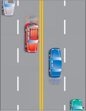
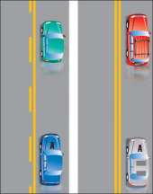
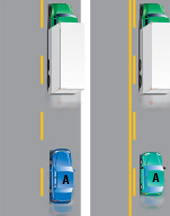
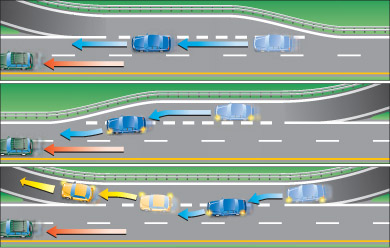
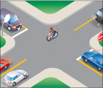
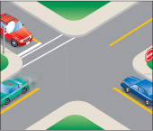
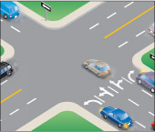
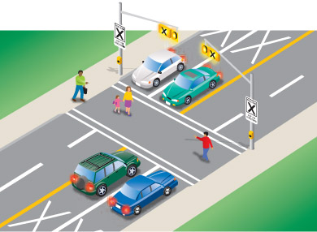
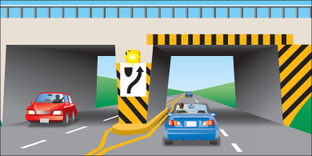

रास्ते के फर्श पर लगाए गए निशान
सड़क पर बने निशान, सड़क संकेतों और ट्रैफिक लाइटों के साथ मिलकर आपको यातायात की दिशा और आपके लिए आवागमन के संभावित और प्रतिबंधित क्षेत्रों के बारे में महत्वपूर्ण जानकारी देते हैं। ये निशान यातायात लेन को विभाजित करते हैं, मोड़ने के लिए लेन दिखाते हैं, पैदल यात्री क्रॉसिंग को चिह्नित करते हैं, बाधाओं को दर्शाते हैं और यह बताते हैं कि कब आगे बढ़ना असुरक्षित है।
पीली रेखाएं विपरीत दिशाओं में जाने वाले वाहनों को अलग करती हैं। सफेद रेखाएं एक ही दिशा में जाने वाले वाहनों को अलग करती हैं।

आरेख 3-1
आपकी लेन के बाईं ओर एक ठोस रेखा का मतलब है कि आगे निकलना असुरक्षित है। ('A' को आगे नहीं निकलना चाहिए।)

आरेख 3-2
आपकी लेन के बाईं ओर टूटी हुई रेखा का मतलब है कि यदि रास्ता साफ हो तो आप ओवरटेक कर सकते हैं। ('A' ओवरटेक कर सकता है यदि आगे ओवरटेक करने के लिए पर्याप्त टूटी हुई रेखाएं हों।)

आरेख 3-3
सामान्य टूटी रेखाओं की तुलना में चौड़ी और पास-पास वाली टूटी रेखाओं को निरंतरता रेखाएँ कहा जाता है। जब आप अपनी बाईं ओर निरंतरता रेखाएँ देखते हैं, तो इसका आमतौर पर मतलब होता है कि आप जिस लेन में हैं वह समाप्त हो रही है या उससे बाहर निकल रहे हैं और यदि आप अपनी वर्तमान दिशा में आगे बढ़ना चाहते हैं तो आपको लेन बदलनी होगी। दाईं ओर निरंतरता रेखाएँ होने का मतलब है कि आपकी लेन अप्रभावित रहेगी।

आरेख 3-4
चौराहे पर सड़क के आर-पार खींची गई एक सफेद रेखा को स्टॉप लाइन कहते हैं। यह दर्शाती है कि आपको कहाँ रुकना है। यदि सड़क पर स्टॉप लाइन अंकित नहीं है, तो क्रॉसिंग पर रुकें, चाहे वह चिह्नित हो या नहीं। यदि क्रॉसिंग नहीं है, तो फुटपाथ के किनारे पर रुकें। यदि फुटपाथ भी नहीं है, तो चौराहे के किनारे पर रुकें।

आरेख 3-5
सड़क पर खींची गई दो समानांतर सफेद रेखाओं से पैदल मार्ग का चिह्न निर्धारित होता है। हालांकि, चौराहों पर बने पैदल मार्ग हमेशा चिह्नित नहीं होते हैं। यदि रुकने की रेखा नहीं है, तो पैदल मार्ग पर रुकें। यदि पैदल मार्ग नहीं है, तो फुटपाथ के किनारे पर रुकें। यदि फुटपाथ नहीं है, तो चौराहे के किनारे पर रुकें।

आरेख 3-6
किसी लेन पर बना सफेद तीर का निशान यह दर्शाता है कि आप केवल तीर के निशान की दिशा में ही आगे बढ़ सकते हैं।

आरेख 3-7
पैदल यात्री क्रॉसिंग को विशिष्ट संकेतों, ऊपर लगी पीली बत्तियों और फुटपाथ पर बने चिह्नों द्वारा पहचाना जाता है। पैदल यात्री क्रॉसिंग को सड़क के आर-पार खींची गई दो सफेद समानांतर रेखाओं द्वारा चिह्नित किया जाता है, और क्रॉसिंग की ओर जाने वाली प्रत्येक लेन में एक X का चिह्न होता है।
चालकों और साइकिल चालकों को लाइन से पहले रुकना होगा और पैदल यात्रियों को तब तक रास्ता देना होगा जब तक कि पैदल यात्री पूरी तरह से सड़क पार करके सड़क से हट न जाएं।

आरेख 3-8
फुटपाथ पर खींची गई दो ठोस रेखाएं पुल के खंभों या कंक्रीट के द्वीपों जैसी स्थिर वस्तुओं से यातायात को दूर रखने का निर्देश देती हैं। चेतावनी के तौर पर इन वस्तुओं पर पीले और काले रंग के निशान भी बनाए गए हैं।

आरेख 3-9
सारांश
इस खंड के अंत तक, आपको निम्नलिखित बातें पता होनी चाहिए:
- सड़क पर बने चिह्नों का उपयोग यातायात नियंत्रण के लिए कैसे किया जाता है
- विभिन्न रंगों और चिह्नों के प्रकारों का उपयोग किस बात को दर्शाने के लिए किया जाता है?